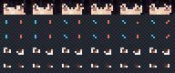
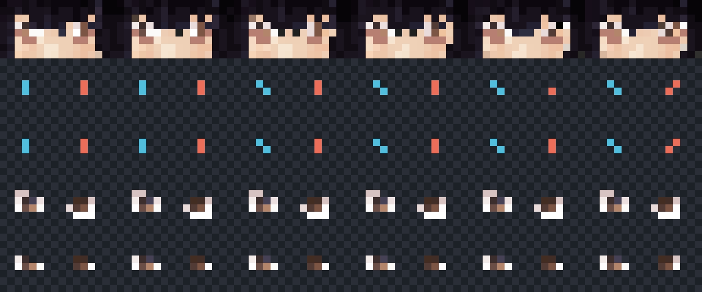

새 Unity 렌더가 아닙니다. 실제47의6프레임과 원본Template216을 사용한 오프라인 레이어 시험입니다. 공동 배치는 순수위상 형태를 보존하지만 안검/흰자 충돌이 발견돼 제품 미채택입니다.
결과·실패 근거 · 정확한 통합 대상과 승인 범위 · 집계 · 셀별 역할·지지·가림·line 회귀 · 실제 배치 코드 · 재현 검사
열=frame96..101. 행=①실제 최종GPU 눈crop ②실제iris ID 진단색 ③gate47 할당 진단색 ④Template216 공동배치, 가림 전 ⑤동일cache의source/known final가림후 독립RGBA레이어. ②③은실제색아님. ④⑤를완성된얼굴합성으로보면안됩니다.


가림만고치면frame100만바뀌고frame101대각은남습니다. 공동cache에서는실제앞쪽hair에가린셀을없애며인위적대칭/최소셀보충이없습니다. 반면상안검/흰자전체key form은부족해추가통합을보류했습니다. 단순검사수·셀수증가를미감통과로쓰지않습니다.